10 部片单 · 恐怖 / 科幻 / 惊悚 / 悬疑 / 剧情
| # | 片名 | 类型 | 评分 / 状态 |
|---|---|---|---|
| 01 | 我是传奇 | 科幻 / 恐怖 / 剧情（末世独角戏） | 8.1 / 68% / 65 |
| 02 | 僵尸世界大战 | 科幻 / 惊悚 / 灾难（全球丧尸） | 7.2 / 66% / 63 |
| 03 | 活死人黎明 | 恐怖 / 惊悚 / 动作（商城围城） | 7.5 / 77% / 7.3 |
| 04 | 僵尸之地 | 恐怖 / 喜剧 / 剧情（末日公路） | 7.3 / 89% / 73 |
| 05 | 马耳他之鹰 | 悬疑 / 惊悚 / 黑色电影（侦探经典） | 7.5 / 99% / 97 |
| 06 | 致命诱惑 | 惊悚 / 悬疑 / 剧情（心理惊悚） | 7.0 / 74% / 67 |
| 07 | 撕裂的末日 | 科幻 / 动作 / 惊悚（反乌托邦） | 7.5 / 40% / 33 |
| 08 | V字仇杀队 | 科幻 / 惊悚 / 剧情（政治寓言） | 8.8 / 73% / 62 |
| 09 | 阿基拉 | 科幻 / 惊悚 / 动画（赛博朋克） | 8.5 / 91% / 76 |
| 10 | 铁男 | 科幻 / 恐怖 / 身体恐怖（日本地下邪典） | 7.2 / 6.8 / 67 分钟 |
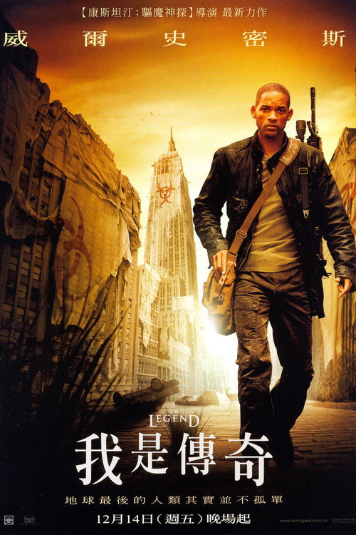
我是传奇 I Am Legend
「世界上最后一个人，每天准时在空城里广播：如果你能听见，请回答。」
剧情梗概
2012 年的纽约。三年前，一种原本用来治愈癌症的基因改造病毒失控，杀死九成人类，把其余一成变成惧光、嗜血的「夜魔」。军方病毒学家罗伯特·奈佛因天生免疫，成了曼哈顿唯一的人类。他白天开车外出搜集物资、在航母甲板上打高尔夫、在音像店跟人体模型说话，天黑前必须回到加固的房子里——因为只要天一黑，这座城市就不再属于他。他唯一的伙伴是一条德国牧羊犬山姆，而活下去的全部意义，是用自己的血做出解药。
亮点
- 弗朗西斯·劳伦斯（《康斯坦丁》《饥饿游戏》）执导，改编自理查德·马特森 1954 年同名小说——这是它的第三次影视化。
- 威尔·史密斯几乎是独角戏：前 40 分钟没有一句有效对白，靠日程表、广播和跟人体模型的对话撑起「一个人的文明」。
- 荒芜曼哈顿是实景封锁拍摄：布鲁克林大桥、时代广场、第五大道封街数周，长草的路口与废弃军车全为真实布置。
- 后半段的转折（不剧透）让「谁是怪物」这个问题被彻底翻转，也是本片与原著精神最接近的一笔。
- 碟片版收录了另一个结局，更贴近小说结尾，影迷间争议至今。
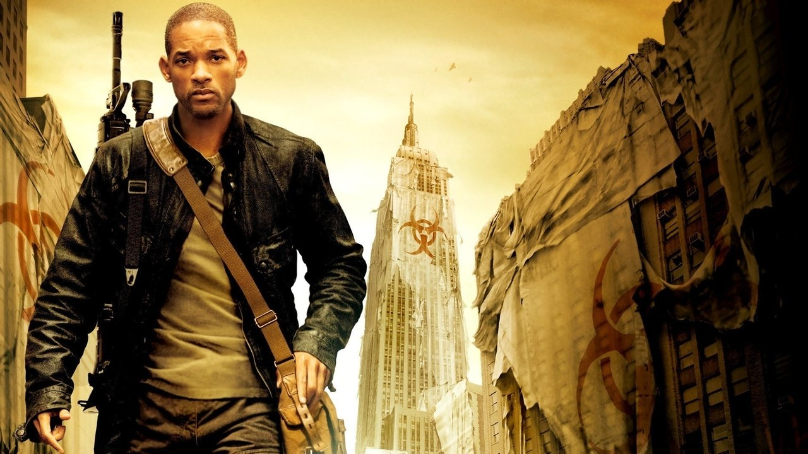
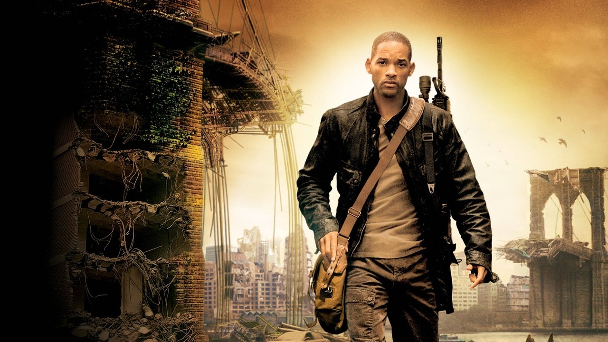
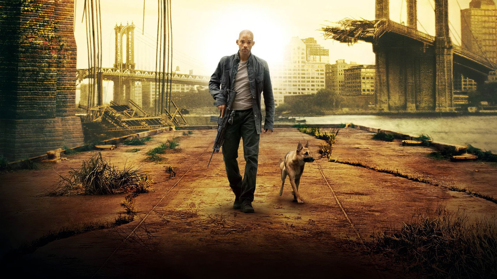
导演与主创 · 他们的历史作品

 饥饿游戏2：星火燎原
饥饿游戏2：星火燎原 饥饿游戏3：嘲笑鸟（上）
饥饿游戏3：嘲笑鸟（上） 饥饿游戏3：嘲笑鸟（下）
饥饿游戏3：嘲笑鸟（下）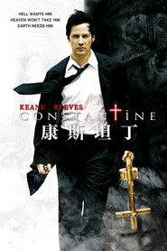
康斯坦丁
 X特遣队
X特遣队 我，机器人
我，机器人 黑衣人3
黑衣人3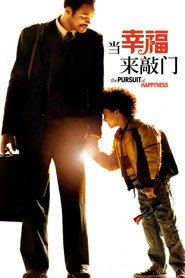
当幸福来敲门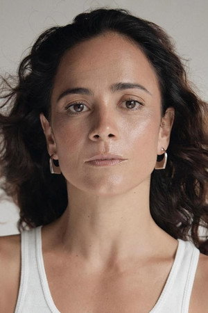
 心灵奇旅
心灵奇旅 极乐空间
极乐空间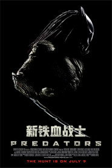
新铁血战士 上帝之城
上帝之城短评（轻微剧透）
《我是传奇》最好的部分，是它不是在拍灾难，而是在拍日常。奈佛不是英雄，他只是每天按时起床、遛狗、补给、做实验，然后赶在天黑前把自己锁起来——这些琐碎的重复，比任何尸潮都更精准地描述了孤独是什么：不是没人陪，是没人可以等你回家。威尔·史密斯这段「一个人的文明」被严重低估，他跟人体模型搭话时那种既清醒又在下坠的状态，是灾难片里少见的心理写实。当然要诚实：烂番茄只有 68%、Metacritic 65，进入第二幕后类型陡然转向、节奏也乱了，很多影评人认为前后半段像两部电影——这个批评成立。但它的核心命题依然锋利：「传奇」（Legend）这个词本身就是由幸存者书写的，谁活到最后，谁就有权定义谁才是怪物。轻微剧透：真正让奈佛改变的，不是他找到了解药，而是他终于意识到自己在这座城里扮演的到底是什么角色。
为什么值得一看
喜欢《僵尸之地》《惊变28年》《末日危途》这类末世求生、又想看一场扎实独角戏的观众；对「孤独」这个主题有共鸣的人。含怪物惊吓与部分恐怖画面（PG-13），血腥度不高。内地未引进，流媒体可看。
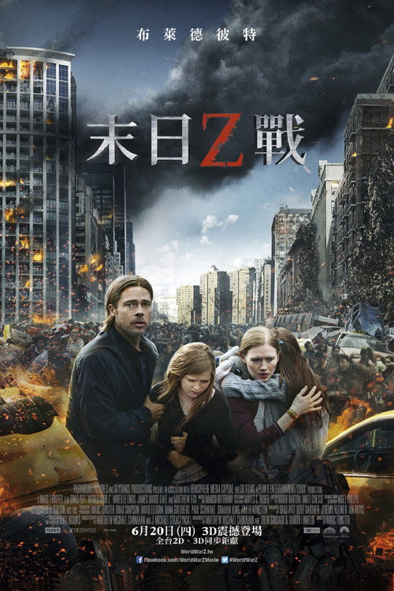
僵尸世界大战 World War Z
病毒从哪来不重要——重要的是，从被咬到转化，只有十二秒。
剧情梗概
前联合国调查员盖瑞·莱恩带着妻子和两个女儿堵在费城街头，下一秒整座城市炸开——被咬的人十二秒内就会转化，然后扑向下一个。盖瑞被老上司召回，任务是跟着一名病毒学家飞遍全球，找到零号病人。从韩国美军基地、耶路撒冷的高墙，到卡迪夫的世卫组织研究中心，每一站他都只比丧尸快一步。
亮点
- 马克·福斯特（《寻找梦幻岛》《007：大破量子危机》）执导，布拉德·皮特兼任制片——这是皮特个人票房最高的作品（全球 5.40 亿美元）。
- 它给出了丧尸片里最独特的一条规则：十二秒感染。这让恐怖不来自缓慢逼近，而来自「一瞬间全城翻转」。
- 耶路撒冷那堵高墙与以色列「第十人」机制，是全片最有现实感的段落。
- 「丧尸海」那场戏动用了数百名特技演员与程序化群集，铺满了整面城墙。
- 剧本由达蒙·林德洛夫、德鲁·戈达德等人接力重写，第三幕整段重拍——成片的割裂感与此有关。
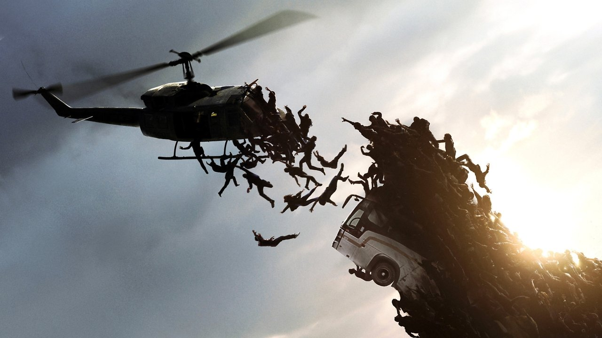
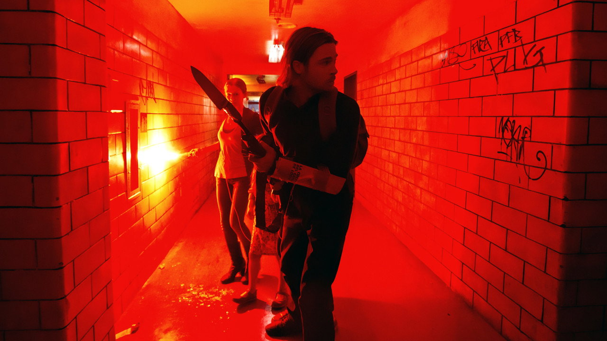
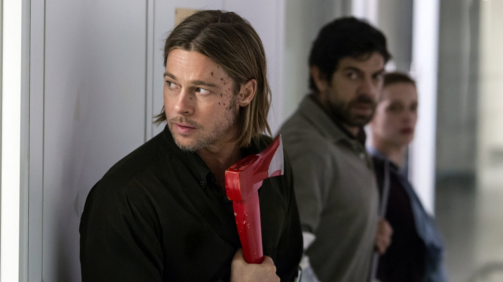
导演与主创 · 他们的历史作品
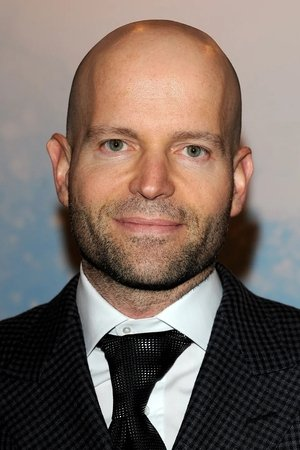
 007：大破量子危机
007：大破量子危机 寻找梦幻岛
寻找梦幻岛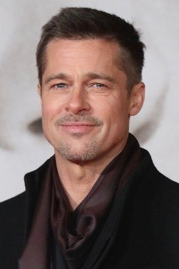
 无耻混蛋
无耻混蛋 搏击俱乐部
搏击俱乐部 本杰明·巴顿奇事
本杰明·巴顿奇事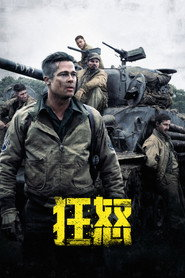
狂怒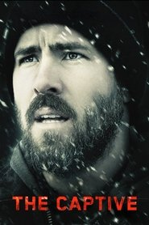
人质 匪帮传奇
匪帮传奇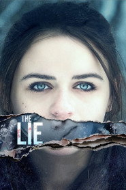
谎言短评（轻微剧透）
《僵尸世界大战》常被拿来跟《惊变28年》比，其实它关心的不是幸存者，而是系统。盖瑞是个调查员，他的武器不是枪，是问问题：零号病人在哪、病毒怎么跳过宿主、为什么某些人会被无视——全片最精彩的段落，是一群人在世卫实验室里靠推理得出「丧尸不会攻击绝症患者」这个结论，那一刻它不是动作片，是一段冷静的流行病学推演。福斯特把「全球尺度」拍得很有说服力：韩国的夜雨、耶路撒冷的人墙、海上的货轮，每一站都像换了一部电影。缺点也真实存在：第三幕被整段重拍，收尾明显仓促，PG-13 的尺度让血腥度被削掉大半，剧本的拼缝清晰可见（烂番茄 66%、Metacritic 63 就是给它这种割裂的）。但作为至今全球票房最高的丧尸片，它把「丧尸灾难」从街头推到了地缘政治的尺度，这一点至今没人复刻。轻微剧透：真正的解药藏在最不起眼的地方——它不让你变强，只让你被无视。
为什么值得一看
喜欢《惊变28年》《釜山行》《生化危机》这类大规模丧尸题材、又想看一点「调查推理」味道的观众；对灾难中的国家机器与集体决策有兴趣的人。含惊悚与丧尸袭击场面（PG-13），血腥度中等。内地未引进，流媒体可看。
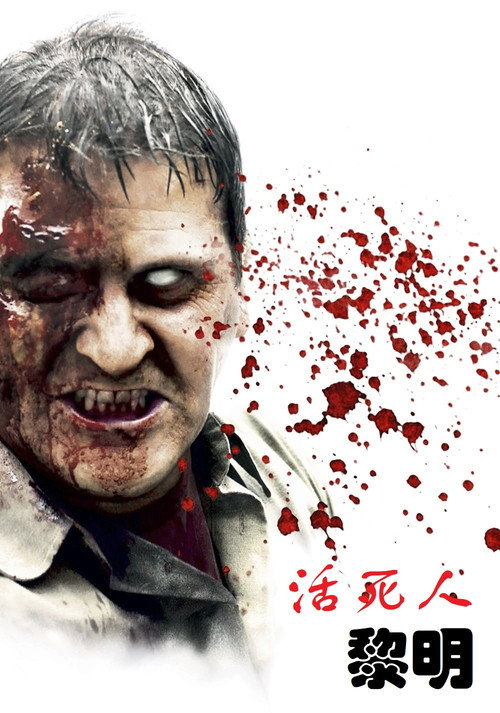
活死人黎明 Dawn of the Dead
他们躲进了全城物资最充足的地方。然后发现，问题从来不是物资。
剧情梗概
护士安娜下班回家，第二天清晨被邻居家的小女孩咬穿了丈夫的喉咙。她从浴室窗户逃出，一路开车逃亡，最后和警察肯尼斯、迈克尔、安德烈及怀孕的卢达躲进一座十字路口购物中心。他们封死入口、清理楼内的感染者、占领枪店，然后在商场里过起了「正常」的日子——直到电停了，被咬的人开始变异，而商场外的东西越聚越多。
亮点
- 扎克·施奈德的长片处女作，此前只拍广告与 MV——他把 MV 式的节奏与狠劲第一次带进了丧尸片。
- 编剧是詹姆斯·古恩（《银河护卫队》），他在保留罗梅罗 1978 年版社会讽喻的同时，重写了人物与结构。
- 对原版最聪明的一处改写：把「缓慢的活死人」换成了「会跑的感染者」，直接影响了此后一整个世代的丧尸片。
- 片头那段清晨爆发戏，从熟睡到街头崩坏一气呵成，是 2000 年代最好的恐怖开场之一。
- 莎拉·波莉饰演的安娜，是这类片里少见的「一直在做决定」的女性角色，而非尖叫工具。
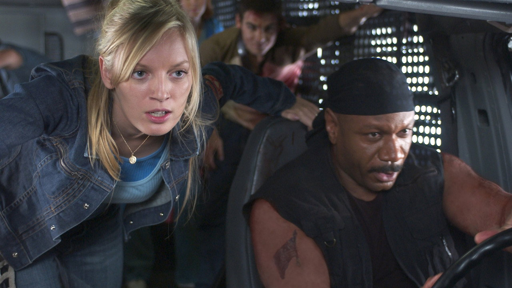
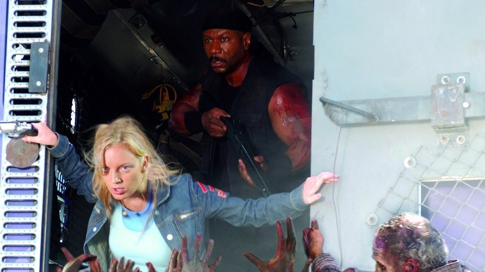
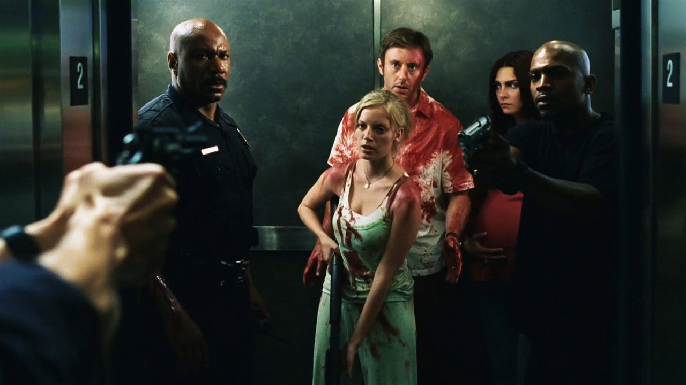
导演与主创 · 他们的历史作品
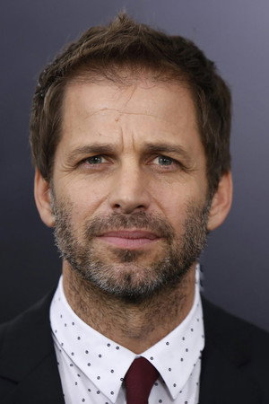
 蝙蝠侠大战超人：正义黎明
蝙蝠侠大战超人：正义黎明 超人：钢铁之躯
超人：钢铁之躯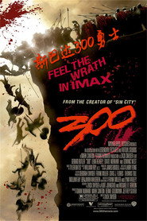
斯巴达300勇士 正义联盟
正义联盟
 无姓之人
无姓之人 人工进化
人工进化 狗男女
狗男女 没有我的日子
没有我的日子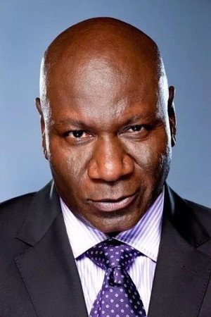
 低俗小说
低俗小说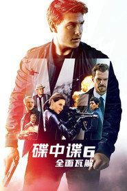
碟中谍6：全面瓦解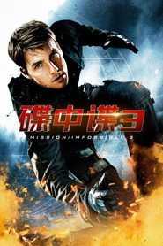
碟中谍3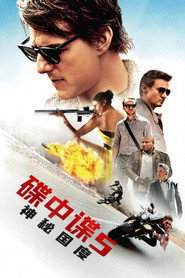
碟中谍5：神秘国度短评（轻微剧透）
翻拍乔治·A·罗梅罗是件吃力不讨好的事，但施奈德交出的这份答卷确实站得住。他保留了原作最狠的内核——商场是消费社会的神殿，而在末日里，它只是一个更大的牢房——却把叙事引擎整个换掉：不再是缓慢的政治讽喻，而是一台从第一分钟就加速的机器。那场开场的清晨爆发戏是教科书级的：一个普通的上班日清晨，四五分钟内秩序、家庭、街道全部崩掉，你甚至来不及理解发生了什么。中段在商场里的「末日日常」是全片最妙的部分，幸存者靠物资撑起一个微型社会，然后又因为人而瓦解——因为罗梅罗从来都知道，真正的威胁在围墙里面。缺点要说：后半段的公路与逃亡收得略急，人物刻画也比原版薄一些（烂番茄 77% 大致公允）。但它重新定义了 21 世纪丧尸片的节奏，这点没有争议。轻微剧透：片尾那段录像带，是本片对「幸存」最不留情的一句注解。
为什么值得一看
喜欢《惊变28年》《僵尸世界大战》《死亡录像》这类快节奏丧尸片的观众；对「密闭空间 + 群体瓦解」有感觉的人。含大量写实血腥与暴力（R 级，未分级版更狠），敏感者慎入。内地未引进。
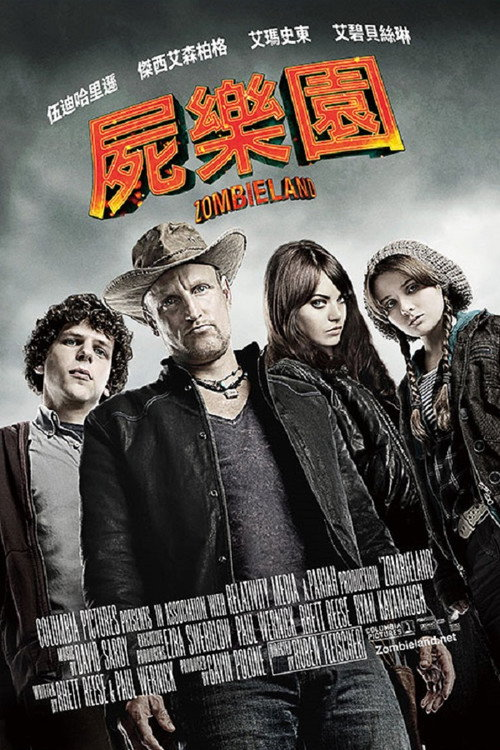
僵尸之地 Zombieland
他有一份活命守则。第一条：随时保持心肺功能良好。
剧情梗概
丧尸瘟疫爆发两个月后，宅男哥伦布带着一份自制的「生存守则」清单，徒步穿越美国想回哥伦布市找父母。路上他遇到开着越野车、满世界找最后一块奶油夹心蛋糕的塔拉哈西，以及一对专骗男人车和枪的姐妹花薇奇塔与小石头。四个人凑成一支状况百出的队伍一路向西，去太平洋游乐场——因为据说那里一个丧尸都没有。
亮点
- 鲁本·弗雷斯彻的长片处女作，此前主要拍广告与 MV；剧本出自《死侍》编剧瑞特·里斯与保罗·韦尼克。
- 全片最著名的设计：每次主角念出一条守则，画面就把那条守则演示一遍——把「规则」玩成了视觉笑点。
- 比尔·默瑞的客串是影史级别的惊喜（不放剧透，你一定要自己撞上）。
- 伍迪·哈里森的塔拉哈西是全片的发动机：一个把末日过成了公路旅行的人。
- 2360 万成本换回全球 1.02 亿票房，此后十年一直是「丧尸喜剧」这个亚类型的天花板。
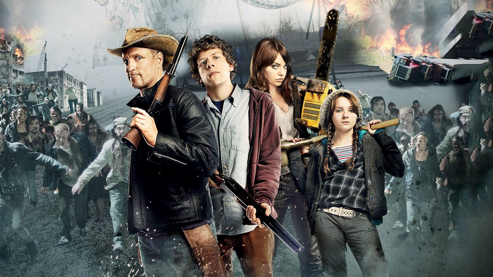
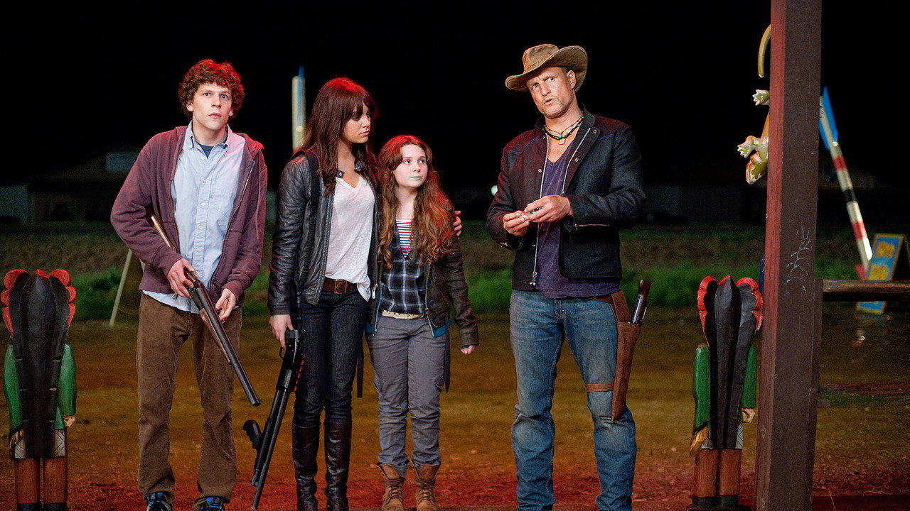
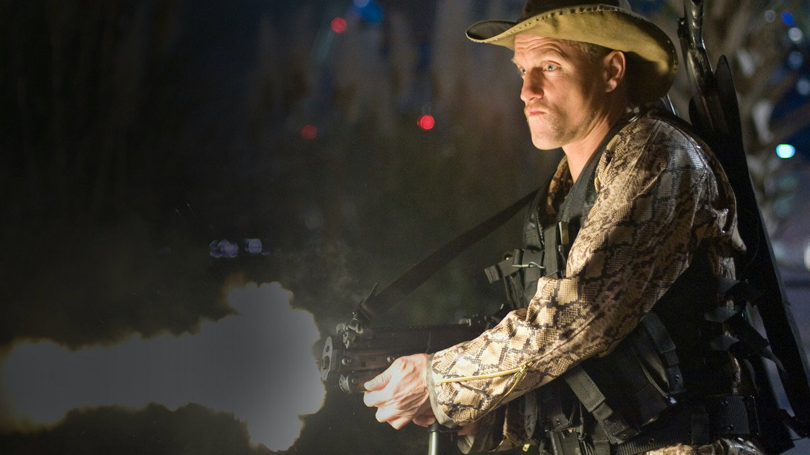
导演与主创 · 他们的历史作品
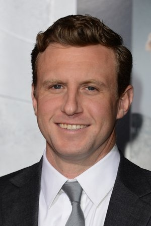
 毒液：致命守护者
毒液：致命守护者 神秘海域
神秘海域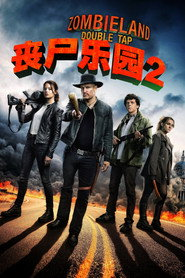
丧尸乐园2匪帮传奇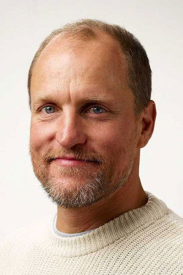
 惊天魔盗团
惊天魔盗团 饥饿游戏
饥饿游戏 毒液2
毒液2 三块广告牌
三块广告牌 惊天魔盗团
惊天魔盗团 社交网络
社交网络 惊天魔盗团2
惊天魔盗团2 里约大冒险
里约大冒险短评（轻微剧透）
《僵尸之地》的聪明在于，它知道丧尸片拍了四十年，真正稀缺的从来不是血浆，而是「为什么要活下去」的答案。于是它用一份生存守则来回答——「别当英雄」「系好安全带」「记得检查后座」，这些听起来像玩笑的规则，其实是一个极度缺乏安全感的人给自己搭起来的临时人格。哥伦布的守则越多，越说明他原本多怕这个世界；而塔拉哈西找的那块奶油蛋糕本质上跟守则是一回事：一个没有意义的执念，正是它让末日还能过下去。弗雷斯彻把恐怖片拍成了公路喜剧，88 分钟一秒不浪费，笑点又狠又准。比尔·默瑞那段客串（不剧透）至今仍是影迷津津乐道的段落，它甚至让「名人客串」这件事重新变得值得期待。缺点极少，硬要说的话，温情收尾比前面的毒舌稍微软了半档。轻微剧透：整部片真正被治愈的不是末日，是那个从不敢下车的人。
为什么值得一看
喜欢《僵尸肖恩》《林中小屋》《活死人黎明》这类「恐怖 + 幽默」混搭的观众；不想被吓到、但想看末日题材的人。含卡通化暴力与血腥（R 级），惊吓强度低。内地未引进，流媒体可看。
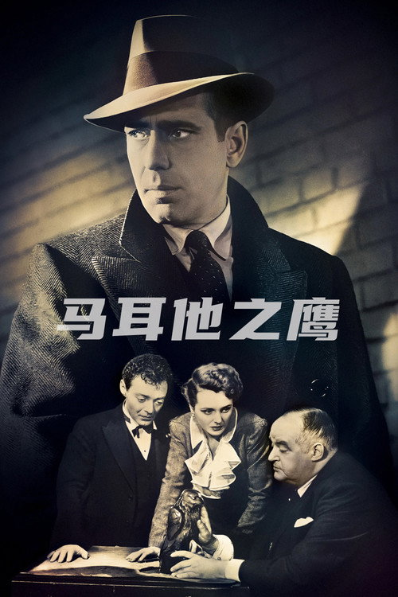
马耳他之鹰 The Maltese Falcon
一尊不存在的鹰，三个各怀鬼胎的人，和一个谁都不能信的侦探。
剧情梗概
旧金山，私家侦探萨姆·斯佩德和搭档阿彻接下一桩委托——一位自称温德利的漂亮女人，要他们跟踪一个叫瑟斯比的男人，找回她失踪的妹妹。当夜阿彻死于跟踪途中，瑟斯比随后也被杀。斯佩德成了警方的头号嫌疑人，同时被卷进一场围绕一尊镶满宝石的「马耳他之鹰」的争夺：出手阔绰的古特曼、神经质的开罗、年轻人威尔默，人人都想要那只鸟，人人都只对他说了一半真话。
亮点
- 黑色电影的开山之作，也是约翰·休斯顿的导演处女作；他一生 15 次获奥斯卡提名。
- 亨弗莱·鲍嘉凭此片从配角跃升为超级巨星，「萨姆·斯佩德」成了硬汉侦探的标准模板。
- 改编自达希尔·哈米特同名小说，几乎逐场照搬原著对白，是文学改编里罕见的高保真案例。
- 悉尼·格林斯特里特（古特曼）与彼得·洛（开罗）的首度银幕搭档，两人此后成了黑色电影的固定符号。
- 入选美国国家电影登记部首批保护名单，AFI 百年百大电影第 31 名；硬汉派推理的最高奖项即以本片命名。
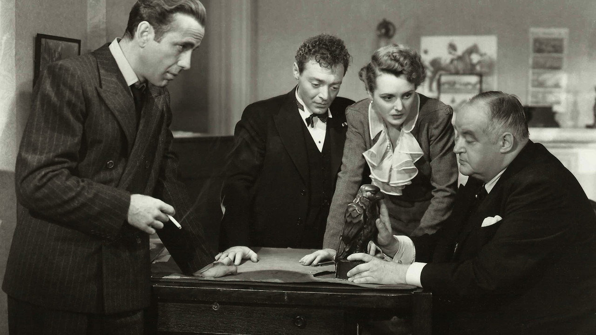
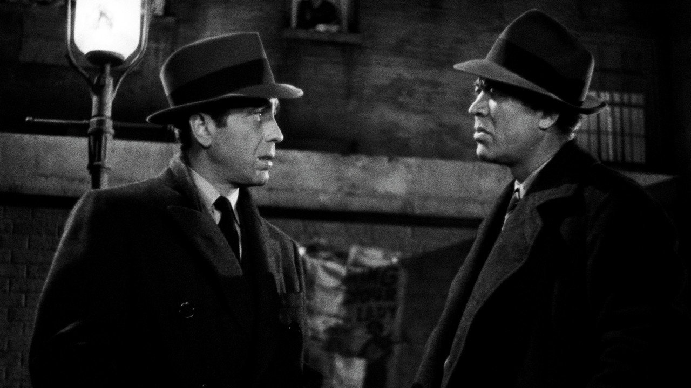
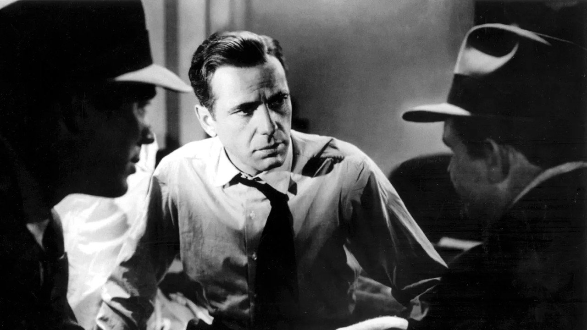
导演与主创 · 他们的历史作品
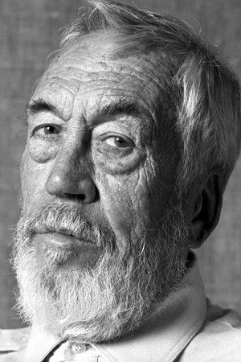
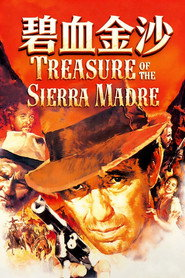
碧血金沙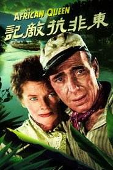
非洲女王号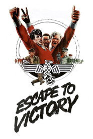
胜利大逃亡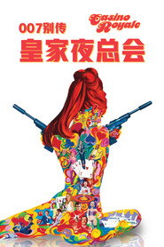
007别传：皇家夜总会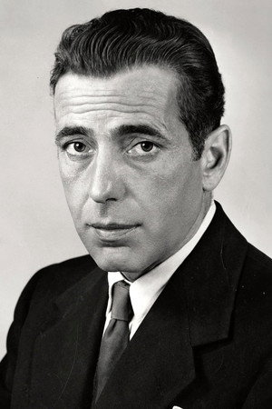
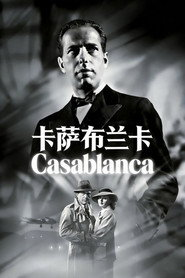
卡萨布兰卡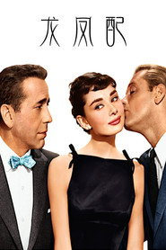
龙凤配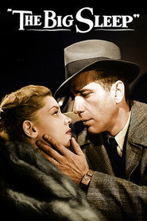
夜长梦多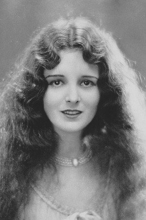
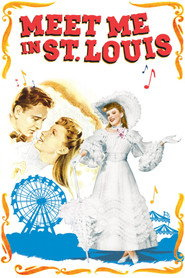
火树银花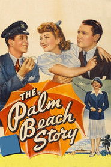
棕榈滩的故事短评（轻微剧透）
《马耳他之鹰》看的不是「谁杀了谁」，是「谁在演谁」。片中每一个人都带着一整套说辞登场：贵妇、绅士、胖子、小混混，每个人都演得很用力，而斯佩德的全部工作就是坐在那里，看穿他们各自的戏。鲍嘉的伟大之处在于不动声色——他不算多聪明，只是比别人更能忍、更能等、更不肯承认自己被打动。休斯顿的镜头语言奠定了此后黑色电影的全部语法：低角度、百叶窗的阴影、烟雾里的人脸、永远拍不到的天花板。剧本几乎原封不动搬用了哈米特的对白，那些句子锋利到今天读依然带感——「越便宜的骗子，话越花哨」。它唯一的门槛是节奏：八十多年前的对白密度极高，第一次看容易漏掉线索。轻微剧透：那尊鹰从头到尾都是假的，而所有人都为它死了——这正是它为什么被称作「梦的原材料」。
为什么值得一看
喜欢《唐人街》《非常嫌疑犯》《利刃出鞘》这类侦探 / 群戏悬疑的观众；想补黑色电影源的影迷。无血腥，属古典悬疑（1941 年审查尺度）。内地未引进。
致命诱惑 Fatal Attraction
他以为那只是一夜。她以为那是开始。
剧情梗概
纽约律师丹·加拉格尔有个体面的家庭：温柔的妻子贝丝、六岁的女儿。妻子带女儿回乡下那一周，他在出版业酒会上认识了编辑艾利克斯·福瑞斯特，两人度过了两周的周末。丹以为这是一次不用负责的越界，礼貌地抽身；艾利克斯不这么看。从打不完的电话，到出现在他家门口，再到走进他家里——一个成年人的失控，开始一寸寸吞掉另一个成年人的全部生活。
亮点
- 阿德里安·莱恩（《一树梨花压海棠》《不忠》《桃色交易》）的代表作，把 80 年代中产生活的光洁表面一层层刮开。
- 格伦·克洛斯凭艾利克斯一角拿下第六次奥斯卡提名——她是极少数靠惊悚片表演被载入影史的女演员。
- 1400 万美元成本换回全球 3.201 亿美元票房，是 1987 年全球票房第二高的电影。
- 六项奥斯卡提名（最佳影片、导演、女主角、女配角、剪辑、改编剧本），最终无一获奖。
- 院线版结局是试映后重拍的，影迷至今仍在争论哪一版更狠。
导演与主创 · 他们的历史作品
 异世浮生
异世浮生 深水
深水 猎杀星期一
猎杀星期一 火星人玩转地球
火星人玩转地球 银河护卫队
银河护卫队
 蚁人
蚁人 心理游戏
心理游戏 蚁人2：黄蜂女现身
蚁人2：黄蜂女现身 本能
本能短评（轻微剧透）
《致命诱惑》常被误读成「恐怖前女友」的原型，那对它不公平，也错过了它真正锋利的地方。艾利克斯不是疯子，她是一个被明确拒绝后、仍然拒绝接受「这件事对她没有意义」的人——她的每一步都有清晰的动机：你不接电话，我就去找你；你说我们有协议，我就去跟你妻子谈。真正恐怖的是，这些行为在相当长一段时间里，都还停在「社会可接受」的边缘之内。莱恩把中产家庭拍得像玻璃展柜：暖色灯光、木地板、钢琴、体面的朋友，然后让一样东西从外面慢慢渗进来。克洛斯的表演是影史级的，她把「体面人的崩坏」演得几乎没有破音，那句台词（不引）之所以让人脊背发凉，正因为她说得合情合理。缺点要诚实：后半段确实滑向了类型片的爽感，豆瓣 7.0 / 烂番茄 74% 也说明它放在今天看略显工整；部分处理（尤其对心理疾病的呈现）带着 80 年代的粗糙，这些都不该被略过。轻微剧透：真正被毁掉的不是那个家，是这个家原来以为自己有多安全。
为什么值得一看
喜欢《消失的爱人》《危情十日》《吾栖之肤》这类「关系失控」惊悚的观众；对中产家庭题材有共鸣的人。含成人内容与写实惊悚场面（R 级）。内地未引进。
撕裂的末日 Equilibrium
在这个国家，感受本身就是罪。——而他今天忘了吃药。
剧情梗概
第三次世界大战后，人类得出结论：一切冲突都源于情感。于是新的国家「利布里亚」用药物「波西安」每天强制镇静全体公民，书籍、画作、音乐一律销毁，产生情感者就地火刑。执行这套法律的是精英教士团，约翰·普雷斯顿是其中最强的一个。直到某天清晨，他打碎了自己的药瓶。
亮点
- 库尔特·维默自编自导，同时设计了全片最著名的动作体系「枪斗术」（Gun Kata）——把概率弹道与近身格斗结合，比《黑客帝国》更早把它系统化。
- 克里斯蒂安·贝尔在《蝙蝠侠：侠影之谜》之前，就已贡献了这种「极度克制 → 逐步解冻」的表演层次。
- 肖恩·宾饰演的搭档帕特里奇只出场十几分钟，却是全片最重的一场戏——他在被带走前读叶芝的诗。
- 全片在柏林的冷战建筑群实景拍摄，灰蓝色调与巨型混凝土构成了极权美学的标准模板。
- 烂番茄仅 40%、Metacritic 33，但 IMDb 7.3、豆瓣 7.5——是典型的「影评人踩、观众爱」的邪典。
导演与主创 · 他们的历史作品
 全面回忆
全面回忆 守法公民
守法公民
 蝙蝠侠：黑暗骑士
蝙蝠侠：黑暗骑士 蝙蝠侠：黑暗骑士崛起
蝙蝠侠：黑暗骑士崛起 蝙蝠侠：侠影之谜
蝙蝠侠：侠影之谜 美国精神病人
美国精神病人 火星救援
火星救援 指环王1：护戒使者
指环王1：护戒使者 木星上行
木星上行短评（轻微剧透）
《撕裂的末日》的所有缺点都摆在明面上：剧本逻辑经不起推敲，几处转折靠巧合，世界观也没解释为什么连快乐都要禁（烂番茄 40%、Metacritic 33 不算冤枉）。但我还是要推它，因为它有两个几乎无人复刻的东西。第一是枪斗术——这不是噱头，而是一套被认真设计出来的动作语言，贝尔在走廊里转身、拔枪、双持的那几场戏，把「效率」本身拍成了一种冷酷的舞蹈。第二是解冻的过程：普雷斯顿不是突然觉醒的，他是先漏掉一剂药，然后注意到阳光照在手上、注意到贝多芬、注意到自己为一条狗难过——情感不是被点燃的，是一点一点渗回来的。贝尔在这里贡献了《黑暗骑士》之前最好的表演：他的脸在前半段几乎没有表情，后半段每多一条皱纹你都看得见。把它当严谨科幻看你会失望，当成一部「极权美学 + 动作设计」的作者片看，它值这个位置。轻微剧透：他最后做的那个选择，不是推翻体制，而是终于允许自己哭出来。
为什么值得一看
喜欢《V字仇杀队》《妙想天开》《人类之子》这类反乌托邦题材、又能接受剧本粗糙的观众；动作设计爱好者。含大量枪战与写实暴力（R 级）。内地未引进，流媒体可看。
V字仇杀队 V for Vendetta
「在这张面具之下不只是血肉，更是一种思想。而思想，是刀枪不入的。」
剧情梗概
未来的英国由独裁者萨特勒统治：宵禁、监听、思想审查与秘密警察无处不在，异见者、同性恋者与外来者被送进集中营。某个雨夜，电视台女助理艾薇在街头被秘密警察围捕，被一个戴着盖伊·福克斯笑脸面具、身披斗篷的人救下——他自称 V。V 在一个又一个纪念日炸毁象征权力的建筑，同时把艾薇带进他地下的藏书阁，让她第一次读到被禁的书、听到被禁的音乐。11 月 5 日临近，V 准备炸掉国会大厦，把选择的权利交还给人民。
亮点
- 沃卓斯基姐妹编剧兼制片（剧本早在《黑客帝国》之前就写好了），由《黑客帝国》副导演詹姆斯·麦克特格执导。
- 雨果·维文全程戴着面具、一秒都没露脸，仅凭声音、肢体与抑扬顿挫的念白塑造出这个角色。
- 娜塔莉·波特曼为艾薇一角真的剃了头，凭此片拿下第 33 届土星奖最佳女主角。
- 改编自阿兰·摩尔与大卫·劳埃德的漫画（摩尔本人要求将署名从成片中移除）。
- 盖伊·福克斯面具自此成为全球抗议运动的文化符号，从「匿名者」到「占领华尔街」都在使用。
导演与主创 · 他们的历史作品
 黑客帝国
黑客帝国 星球大战2：克隆人的进攻
星球大战2：克隆人的进攻 黑客帝国2：重装上阵
黑客帝国2：重装上阵 黑客帝国3：矩阵革命
黑客帝国3：矩阵革命
 黑天鹅
黑天鹅 雷神
雷神 湮灭
湮灭 雷神2：黑暗世界黑客帝国
雷神2：黑暗世界黑客帝国 美国队长黑客帝国2：重装上阵黑客帝国3：矩阵革命
美国队长黑客帝国2：重装上阵黑客帝国3：矩阵革命短评（轻微剧透）
《V字仇杀队》是一部你会先被爽到、然后才开始想它的电影。它的第一层是复仇：一个被体制做成怪物的人，用烟花、匕首和莎士比亚式的长句，把整座城市的恐惧反推回去。第二层才是它真正想问的——V 到底是自由斗士还是恐怖分子？他为了一个目标可以牺牲谁？艾薇在雨中张开双臂那场戏，不是被拯救，是被剥夺之后再自己长回来；而 V 自己也在最后承认，他做的事并不比对手干净。沃卓斯基把漫画里关于暴力、身份与集体记忆的讨论，压进了一个红黑对照的舞台：柴可夫斯基《1812 序曲》配着漫天烟花与崩塌的大本钟，把一场复仇拍成了诗。缺点要诚实：豆瓣 8.8 与烂番茄 73%、Metacritic 62 之间的落差极大，海外影评人普遍认为它说教、戏剧化、把复杂问题简化了——这个批评是成立的。但作为一部关于「恐惧如何被制造、又如何被归还」的政治寓言，它在中文世界的共鸣程度，本身就是一种答案。轻微剧透：最后摘下面具的那些人，没有一个是还活着的。
为什么值得一看
喜欢《黑客帝国》《妙想天开》《撕裂的末日》这类反乌托邦与政治寓言的观众；对符号、宣传与集体行动有兴趣的人。含暴力与酷刑描写（R 级）。内地未引进影院，CCTV-6 曾播出。
阿基拉 Akira
2019 年，新东京。以及一个终于得到了力量的、一直很弱的小孩。
剧情梗概
1988 年，东京被一场新型炸弹夷平，第三次世界大战随即爆发。31 年后，人类在东京湾上重建了灯火通明的新东京——表面繁荣，底层是腐败的政府、失控的军方与频频暴动的街头。暴走族少年铁雄在一次飙车中撞上军方逃逸的超能力实验体，被带走后，他体内某种东西醒了。那个从小活在金田光环下、一直被人护着的弱小孩，第一次拥有了可以碾压军队的力量，然后开始加速失控。
亮点
- 大友克洋自编自导，改编自他自己的长篇漫画；全片约 16 万张手绘原画，是当时日本动画史上成本最高的作品之一。
- 它几乎定义了「赛博朋克」的视觉语汇，直接影响了《黑客帝国》《银翼杀手2049》《赛博朋克 2077》。
- 作画采用「先画背景、再套光影」的工艺，霓虹、雨夜与机械细节的精度在 1988 年属于降维打击。
- 艺能山城组的印尼加美兰配乐与电子合成器混搭，是动画音乐史上最大胆的实验之一。
- 岩田光央（金田）与佐佐木望（铁雄）的配音，是这两人几十年来最被反复引用的角色。
导演与主创 · 他们的历史作品
 回忆三部曲
回忆三部曲 红辣椒
红辣椒短评（轻微剧透）
《阿基拉》最被说滥的是画面，但它真正狠的是主题：一个从未被当回事的人，一旦拿到了绝对力量，会做什么？铁雄不是反派，他只是终于不用再仰视任何人了——他做的第一件事不是统治世界，是把所有曾经无视他的人一个个抹掉，包括他最好的朋友。大友克洋把「弱者的报复」拍成了一场肉体的无限增殖：铁雄越是失控，身体就越膨胀，最后变成一坨吞噬一切的肉块，而那坨肉块的形状，仍然像个蜷缩着的、委屈的孩子。这比任何反派宣言都可怕。技术上它当然超前：新东京的雨夜霓虹、透视精确到像素的街景、摩托车滑行的那道拖影，1988 年能做出来的只有它。缺点要说：改编压缩了漫画五卷的体量，后半段的政治支线对第一次看的观众会显得杂乱，第三幕节奏也陡然加速。轻微剧透：金田最后做的那件事不是打败他，是进去把他拉回来——而那已经回不来了。
为什么值得一看
喜欢《攻壳机动队》《银翼杀手》《移魂都市》这类赛博朋克科幻的观众；想理解「为什么这么多大片都在抄它」的人。含大量写实暴力与身体异化画面（R 级），成年向。内地未引进。
铁男 Tetsuo: The Iron Man
他刮胡子的时候，从脸颊里捏出了一根钢钉。
剧情梗概
一个金属恋物癖者把钢管塞进自己大腿的伤口，逃跑时被一对情侣撞死，两人把尸体藏进树林。第二天，那个白领青年刮胡子时发现脸颊里长出了金属。地铁上，一个手生铁爪的女人向他扑来。回到家，他在与女友的缠绵中发现自己的身体正在一寸寸被铁替换——从皮肤、到牙齿、到躯干——最后变成一具由废铁、电线与钻头组成的怪物。而那个被他撞死的人，正在用意念完成这一切。
亮点
- 塚本晋也自编、自导、自演、自摄、自剪、自美术，用 8mm 与 16mm 混合拍摄，成本极低。
- 全片 67 分钟，黑白高对比度 + 逐格动画 + 重金属敲击配乐，是「赛博朋克身体恐怖」的源头之一。
- 《铁男》三部曲的开篇（其后有《铁男2：血肉横飞》《铁男3：子弹人》），也让世界第一次注意到日本地下电影。
- 石桥莲司、田口智朗等地下剧团班底出演，全员几乎零报酬。
- 它比《攻壳机动队》更早提出同一个问题：当身体可以被替换，「人」还剩什么——只不过它用的是废铁，不是义体。
导演与主创 · 他们的历史作品
短评（轻微剧透）
《铁男》不是一部能被「喜欢」或「不喜欢」评价的电影，它是一个事件。67 分钟、黑白、噪点大到像在刮你的视网膜，节奏快到不给你眨眼的时间——塚本晋也用一台 8mm 摄影机、一堆废铁和一支噪音乐队，拍出了 80 年代最极端的一次身体恐怖。它的表面是荒诞的：男人长出钻头、女人变成机械、两个人最后融成一堆飞向城市的废铁。但底下的问题非常正经：在一个已经被工业和欲望彻底金属化的都市里，人的肉体还有什么位置？塚本的答案是——肉体正在主动迎接金属，因为成为机器至少意味着不再软弱。这个答案在 1989 年是惊世骇俗的，今天看几乎是预言。它当然不适合所有人：没有叙事逻辑、没有人物弧光、没有喘息，67 分钟里你只会被持续敲击。但如果你想理解《攻壳机动队》《变蝇人》《某种物质》这些作品的精神祖先在哪，你得从这里开始。轻微剧透：最后那场融合不是毁灭，是他们终于合成了同一个东西。
为什么值得一看
喜欢《变蝇人》《某种物质》《阿基拉》这类身体恐怖与工业邪典的观众；对实验影像、地下电影有兴趣的人。含强烈身体异化、血腥与成人内容（R / 18 禁），心理承受力弱者与未成年人请勿观看。内地未引进。